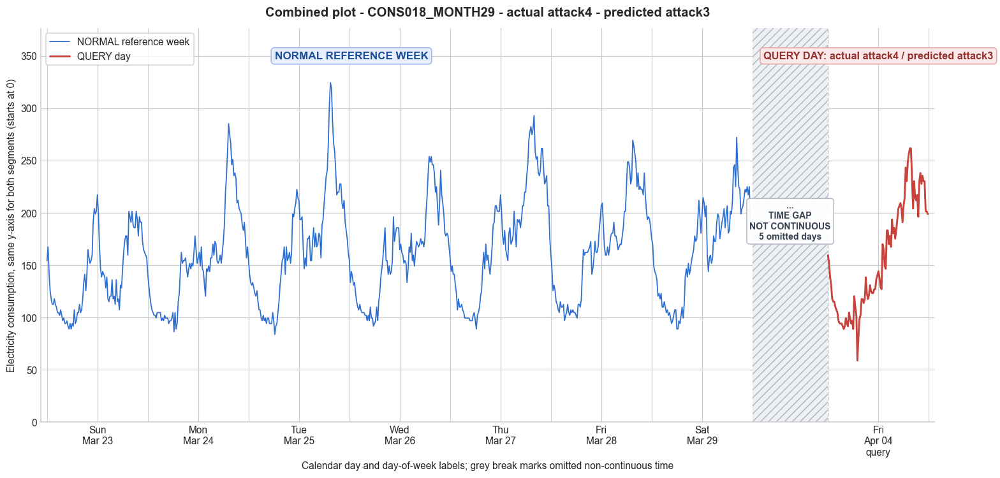

CONS018_MONTH29 · actual attack4 · predicted attack3
- Pair
- CONS018_MONTH29
- GT
- attack4
- Prediction
- attack3
- Binary GT
- attacked
- Binary Prediction
- attacked
- Source
- E010
- Parse
- stored
- Date
- 2014-04-04
- Weekday
- Friday
- Latency
- 2.00 min
- Tokens
- 10142

Final output
Classification: - Manipulated Identified Attack: - Most Likely: Attack 3 - Confidence: Medium - Reasoning: The query day shows irregular, sample-specific reductions, especially a deep dip to 58.8 in the morning, which is far below the normal Friday minimum of 96.86 and absent in any reference day. The afternoon and evening values remain similar to the typical Friday profile, ruling out a constant scaling factor (Attack 1), and the reductions are not confined to a single contiguous block, eliminating Attack 4. Only Attack 3, where each sample is multiplied by a unique random factor between 0 and 1, explains the scattered, uneven lowering observed. Attack_Behavior_Explanation: - Each 15-minute interval’s actual consumption is multiplied by a different random value in (0,1), producing a non-uniform reduction across the day. Early morning readings are drastically lowered (factors as low as ~0.5), while later intervals remain near normal (factors close to 1). This manipulation distorts both the trend and the magnitude, creating an irregular pattern with abrupt drops. Technical causes include meter bypass, magnetic interference, or reverse current, which can intermittently alter metered values.
Prompt
You are a domain expert in smart grid security and electricity theft analysis, with deep knowledge of non-technical loss (NTL) attack patterns in smart meters. You are given: 1. A plot of one week of original (normal) energy consumption for a smart meter, provided as context for the customer's typical consumption behavior. 2. A plot of one day of energy consumption for the same smart meter, which may or may not be manipulated. Below are common attack types, each defined by how consumption values are altered, their impact on magnitude and trend, and their possible technical causes. Attack 0: Generated by replacing all electricity consumption samples with zero values for the entire observation duration. Simulates a scenario where no energy usage is reported at all. May be caused by a total meter bypass or severe meter malfunction. Completely eliminates both the trend and magnitude of the consumption profile. Attack 1: Multiplies the actual energy consumption by a constant random value between (0,1). The lower the factor, the higher the severity. Can be triggered by meter bypass, magnetic interference, reverse current, and false data injection. The consumption trend remains the same but the magnitude is uniformly reduced. Attack 2: Generated by replacing consumption samples with zeros for a random duration. Also known as an on-off attack. Can be caused by full meter bypass, false data injection, and reverse current. Changes both the trend and amplitude. Attack 3: The actual consumption is multiplied by different random factors between 0 and 1, with a unique factor per sample. Similar to Attack 1 but the scaling factor varies per reading. Caused by meter bypass, magnetic interference, and reverse current. Changes both the trend and amplitude. Attack 4: Simulates energy theft over a randomly selected period within the observation window. All measurements in that period are reduced. Caused by meter bypass, magnetic interference, reverse current, and false data injection. Changes both the trend and amplitude. Attack 5: Each sample is replaced by a false value obtained by multiplying the average normal consumption by a random variable between 0 and 1, with a different variable per sample. Caused by false data injection. Produces a completely different pattern from the original consumption profile, changing both trend and magnitude. Attack 6: A random cut-off point is selected and all consumption values above it are replaced by that cut-off value. The attacker avoids exceeding a predefined maximum limit. Mainly caused by false data injection. Changes both the trend and amplitude. Attack 7: A random cut-off point is subtracted from each sample; if the result is negative, zero is reported. Similar to Attack 6 but replaces exceeding values with zero instead of the cut-off point. May be caused by false data injection or total meter bypass. Does not change the trend but reduces overall consumption. Attack 9: All samples are replaced by the average daily energy consumption, resulting in a flat constant profile. Easily detectable because constant consumption does not reflect normal customer behavior. Caused by false data injection. Eliminates all trends. Attack 10: Reverses the consumption pattern without reducing the total amount. Applicable when the electricity company uses time-varying pricing, allowing the attacker to shift high consumption to off-peak periods. Caused by false data injection. Changes the trend without decreasing total consumption. Attack 12: The attacker replaces their consumption pattern with that of a lower-consuming user. The legitimate user unknowingly pays the adversary's electricity bill. Caused by false data injection. Attack IEEE: For each 15-minute interval across the entire day, the consumer either reports the actual electricity consumption or substitutes it with zero. The result is a profile where some intervals reflect real consumption while others are zeroed out, creating an irregular pattern across the full day. May be caused by false data injection. Changes both the trend and amplitude. Given the two plots, determine: 1. Whether the day is attacked or original - compare the flagged day against the normal week and assess whether the consumption pattern is consistent with normal behavior or shows signs of manipulation. If the day is consistent with the customer's typical consumption behavior, classify it as original and provide no further analysis. If manipulation is detected, proceed to point 2. 2. Which attack type this most likely is - identify the single most probable attack and justify your choice based on how the flagged day deviates from the normal week. 3. The behavior of the identified attack - explain how the consumption values are manipulated, their impact on magnitude and trend, and the possible technical causes behind this type of attack. Output Format: Classification: - Original | Manipulated Identified Attack: (fill only if manipulated) - Most Likely: Attack X - Confidence: High | Medium | Low - Reasoning: Why it matches Attack X and why Attack Y and Attack Z were ruled out (list top 2 alternatives considered) Attack_Behavior_Explanation: (fill only if manipulated) - How consumption values are manipulated relative to the normal week - Impact on magnitude and trend - Possible technical causes
Reasoning content
We are given a smart meter's one-week normal consumption data (Day 0 to Day 6) and a query day (DAY_ID=5) that may or may not be manipulated. The metadata says the query day is DAY_ID=5 in the week, and the week of reference is from the previous month (March vs April). But we must compare patterns. First, let's compare the statistics: Reference week Day 5 (which is also DAY_ID=5, Friday) has stats: min=96.86, max=269.63, std=46.23, mean=167.51. Query day stats: min=58.80, max=261.78, std=52.18, mean=155.78. The query day has a lower minimum and slightly lower mean, but similar max and std. The reference Day 5 is also a Friday, but in March (cal_month=3), query day is cal_month=4, dow=4, dom=12. So both are Fridays, so we can compare directly. Looking at the actual readings of query day, we see an interesting pattern: The first portion of the day (indices 0-30 or so) shows lower values than typical, with a notable dip to 58.80 at index 28 (around 7:00-7:15 if 96 intervals, index 0 = 00:00). Then it rises. But more suspiciously, from index 48 (noon) onwards, the values are quite similar to the reference day's afternoon/evening pattern? Let's compare more carefully. We have the actual arrays. I'll align them for easy comparison. Reference Day 5 is provided, query day is provided. Let's list a few key points: Reference Day 5 (Friday): 00:00-...: 159.69, 146.60, 125.65, 130.89, 125.65, 115.18, 112.57, 107.33, 104.71, 115.18, 109.95, 109.95, 112.57, 96.86, 102.09, 104.71, 112.57, 104.71, 102.09, 107.33, 104.71, 107.33, 104.71, 104.71, 102.09, 99.48, 112.57, 112.57, 109.95, 117.80, 143.98, 164.92, 159.69, 162.30, 162.30, 162.30, 164.92, 167.54, 172.77, 141.36, 146.60, 157.07, 172.77, 162.30, 162.30, 167.54, 183.25, 193.72, 206.81, 209.42, 188.48, 167.54, 159.69, 159.69, 167.54, 159.69, 167.54, 178.01, 180.63, 180.63, 191.10, 178.01, 178.01, 172.77, 164.92, 167.54, 170.16, 170.16, 178.01, 185.86, 201.57, 201.57, 225.13, 248.69, 248.69, 243.46, 227.75, 232.98, 269.63, 264.40, 256.54, 248.69, 225.13, 238.22, 222.51, 225.13, 222.51, 222.51, 217.28, 238.22, 217.28, 201.57, 193.72, 196.34, 193.72, 185.86 Query day: 159.69, 151.83, 138.74, 130.89, 117.80, 115.18, 115.18, 109.95, 107.33, 104.71, 96.86, 94.24, 94.24, 94.24, 91.62, 89.01, 91.62, 99.48, 94.24, 91.62, 104.71, 99.48, 94.24, 96.86, 89.01, 120.42, 109.95, 102.09, 58.80, 81.57, 98.64, 102.43, 117.61, 117.61, 113.82, 117.61, 138.48, 123.30, 117.61, 121.40, 130.89, 125.20, 123.30, 123.30, 127.09, 127.09, 136.58, 140.37, 144.17, 138.48, 128.99, 127.09, 170.16, 164.92, 149.21, 146.60, 183.25, 183.25, 170.16, 178.01, 167.54, 193.72, 180.63, 185.86, 175.39, 183.25, 193.72, 204.19, 206.81, 209.42, 204.19, 191.10, 206.81, 214.66, 243.46, 230.37, 248.69, 256.54, 261.78, 261.78, 232.98, 204.19, 230.37, 214.66, 212.04, 217.28, 196.34, 230.37, 238.22, 227.75, 235.60, 230.37, 230.37, 201.57, 201.57, 198.95 First observation: The first half of the day (indices 0-47, roughly 00:00-11:45) shows many values that are lower than the reference day. In the reference, at the start we have 159,146,125,... and it stays above ~100 except a couple dips to 96.86, 99.48. In the query day, from index 0 to ~30, we see values dropping: 159.69, 151, 138, 130, 117, 115, 115, 109, 107, 104, 96.86, 94.24, 94, 94, 91, 89, 91, 99, 94, 91, 104, 99, 94, 96, 89, 120, 109, 102, 58.80 (very low!), 81.57, 98.64, 102.43... So the early morning period has abnormally low readings, especially the 58.80 and 81.57 which are much lower than any reference day minimum for that day (96.86). The reference week's Day 5 minimum is 96.86, so seeing 58.80 is a huge drop. From index 52 (13:00?) onwards, the query day seems to follow a similar pattern to the reference day, but not exactly identical. The reference afternoon/evening has peaks around 206,209, etc., and then high peaks later (269.63). The query day has similar peaks: 206.81, 209.42, then 243.46, 230.37, 248.69, 256.54, 261.78, 261.78, etc. The maximum is 261.78 vs 269.63, so similar. The evening decline also similar. The query day pattern looks like the early part of the day has been replaced with lower values, possibly with some zeros or near-zero? Actually 58.80 is not zero, but significantly reduced. The overall shape is not completely flat in the morning, but there are irregularities: the dip to 58.80 is abrupt after a 102.09, then jump to 81.57, etc. It doesn't look like a smooth pattern. Now, consider attack types. Attack 2: on-off, replacing with zeros for random durations. The query day does not have zeros; all values are >50. So not Attack 2. Attack 0: all zeros; not. Attack 1: constant factor between 0 and 1, preserving trend but reducing magnitude. The trend seems altered: the morning pattern is not simply a scaled-down version; the dips are too deep and irregular. For instance, reference morning: index 0-10: 159,146,125,130,125,115,112,107,104,115,... scaled by say 0.6 would give 95,87,75,... not 58.80 mixed with 120. So not constant scaling. Attack 3: different factor per sample. That could cause irregular reductions. So it could be Attack 3. Attack 4: randomly selected period reduced. The reduction seems concentrated in roughly the first half (or first ~30 indices) but not exactly a contiguous block: indices 0-23 show some low but not drastically low values, then index 24 (89.01) is not extremely low, index 25 120.42 (higher), index 26 109.95, index 27 102.09, index 28 58.80 (low), index 29 81.57, index 30 98.64, index 31 102.43, then further indices increase. So the low values are interspersed, not a single contiguous period. It could be multiple periods reduced? But Attack 4 description: "Simulates energy theft over a randomly selected period within the observation window. All measurements in that period are reduced." So it's one contiguous period. Here reduction seems spread out in early hours, but not all measurements are reduced to the same degree; some are normal (120.42, 109.95, 102.09) around the very low ones. This could be Attack 3: each sample multiplied by random factor. Attack 5: replace each sample by false value = average normal * random[0,1]. The average normal for reference day 5 is 167.51, so the false values would be random numbers between 0 and ~167.51. Looking at the morning, we see values like 94.24, 89.01, 58.80, etc., which could be random, but then the afternoon values are clearly not random: they follow a realistic consumption pattern similar to the reference day. Attack 5 would produce completely random noise across the whole day, not a realistic afternoon pattern. So not Attack 5. Attack 6: cut-off value, replace all above with that cut-off. Not likely because we see high values (261.78) that are not limited. Attack 7: subtract cut-off from each sample, negative -> 0. Similar to Attack 6 but resulting values would be original - cut-off. Could produce low values but then the afternoon values would also be reduced equally, unless the cut-off is small? Actually if you subtract a constant cut-off from each sample, the reduction is uniform across the day. Here the reduction is not uniform: early morning is drastically reduced, but afternoon seems almost unchanged. For example, reference index 0: 159.69, query: 159.69 (identical). Index 1: 146.60 vs 151.83 (query higher!). Index 2: 125.65 vs 138.74 (query higher). Index 3: 130.89 vs 130.89 (equal). So not a simple subtraction. Attack 7 would shift all values down, but here many early values are lower, some equal or even higher. So not Attack 7. Attack 9: constant flat profile; not. Attack 10: reverse pattern; not. Attack 12: replace with lower-consuming user's pattern; could be possible, but the afternoon pattern seems very similar to the reference day's afternoon pattern (values are close). If it were replaced with another user, we'd expect a different pattern entirely, not just a reduced morning and normal-like afternoon. Attack IEEE: "For each 15-minute interval across the entire day, the consumer either reports the actual electricity consumption or substitutes it with zero. The result is a profile where some intervals reflect real consumption while others are zeroed out, creating an irregular pattern across the full day." Here, we don't see zeros; we see reduced values but not zeros. So not exactly IEEE unless the attacker reports zero but in the data we see low values? The description says substitutes with zero, so it would be zero. Not present. So we are left with Attack 3, Attack 4 (but Attack 4 is contiguous period; not perfectly contiguous here?), Attack 1 (constant factor) no. Attack 3 is "multiplied by different random factors between 0 and 1, with a unique factor per sample." That would produce an irregular pattern with reductions varying per sample, while keeping the overall shape somewhat if the factors are not too extreme, but can create sudden dips. The query day morning has values that fluctuate: 159.69 (same as ref), 151.83 (slightly higher than ref's 146.60), 138.74 (higher than ref's 125.65), etc. So some values are higher, not just multiplied by factors <1. If it's Attack 3, each sample multiplied by a random factor between 0 and 1, then the query value would always be <= original. But here we see at index 1: query 151.83 > ref 146.60, so that's not <=. So Attack 3 would imply reduction only, but here there are some increases. Could it be that the "original" here is not the reference day's exact readings? The attack is applied to the actual consumption of that day, which we don't know; we only have the normal week's typical pattern. The query day might have its own legitimate variation, so slight increases are possible. But Attack 3 definition: "Multiplies the actual energy consumption by a constant random value between (0,1)" — wait, Attack 3 says "multiplied by different random factors between 0 and 1, with a unique factor per sample." So it multiplies the actual consumption (the true consumption of that day) by a factor between 0 and 1. Since we don't know the true consumption, the observed query value could be close to or even above the reference typical consumption if that day was a high-usage day. For example, if the true consumption was 200, and the factor is 0.8, the observed is 160, which might still be above the reference 146. So comparing to reference day is not a direct "ref must be >= query". So we need to look at the pattern consistency. The query day shows an overall pattern similar to the reference day in the afternoon/evening, but with some deviations. The morning has a deep dip and low values that seem unnatural: a sudden drop to 58.80 and 81.57, which are not present in any normal day (reference week minimums are all >80, and the same weekday min is 96.86). This suggests manipulation. Could it be Attack 4: a specific period where measurements are reduced? The low values appear around indices 28-29 (58.80, 81.57), but also earlier values like 89.01, 91.62, 94.24 are lower than usual (but not extremely). The period from index 0-31 seems generally lower, but with some normal values (120.42, 109.95, 102.09). A contiguous period reduction would likely have a block of reduced values, but here it's scattered. However, Attack 4 says "Simulates energy theft over a randomly selected period within the observation window. All measurements in that period are reduced." It doesn't specify how they are reduced; it could be multiplied by a constant factor for that period, or each reduced by a constant amount. The example might be: a period from index 10 to 30 is selected, and all values are halved. That would cause a block of low values. In our case, the low values are not a clean block; there are higher values interspersed. So it's more like Attack 3 where each sample has its own factor. Attack IEEE is zero-substitution for some intervals. No zeros. So Attack 3 seems most plausible: many samples in the early part of the day are significantly reduced by different factors, creating an irregular pattern with a suspicious dip. The afternoon seems less attacked or maybe the attacker didn't apply factors there, or the factors were close to 1. But Attack 3 says "unique factor per sample" meaning all samples are affected? The description: "The actual consumption is multiplied by different random factors between 0 and 1, with a unique factor per sample." So it's applied to all samples? Possibly yes, to every sample. But in our case, the afternoon values are quite similar to the reference, perhaps the factors for those samples were near 1 (e.g., 0.9-0.99). So it's consistent. Another possibility is that the attacker applied a partial attack, like Attack 1 but with varying factors only during certain times, but Attack 3 is exactly that: varying per sample. Now, I need to rule out top alternatives. Attack 1: constant factor - would produce a uniform scaling, but the ratio of query to reference varies a lot (e.g., index 0: 159.69/159.69=1, index 1: 151.83/146.60=1.036, index 28: 58.80/109.95=0.535, index 29: 81.57/117.80=0.692, index 48: 128.99/188.48=0.684, index 49: 127.09/167.54=0.758... varied). So not constant. Attack 2: on-off with zeros, not. Attack 4: contiguous period reduction; the reduced values appear in multiple separate clusters (early morning spread), so not a single contiguous period. Could it be multiple periods? Attack 4 says "a randomly selected period", singular. So unlikely. Attack 5: random replacement; afternoon shows real pattern, so not. Thus Attack 3 is most likely. Confidence: Medium. Because we cannot be completely certain without knowing the true consumption, but the pattern strongly suggests irregular reductions typical of sample-wise random scaling. Attack_Behavior_Explanation: For Attack 3, each consumption reading is multiplied by a random factor between 0 and 1, unique per sample. This reduces magnitude unevenly, altering both trend and amplitude. Possible causes: meter bypass, magnetic interference, reverse current. The query day shows severely reduced values in the early hours (e.g., drop to 58.8) while afternoon/evening remains closer to normal, indicating that the attacker likely applied varying reduction factors, with some factors very low during early periods. Now, output format: Classification: Manipulated Identified Attack: - Most Likely: Attack 3 - Confidence: Medium - Reasoning: The query day's consumption exhibits irregular reductions, with a dramatic drop to 58.8 in the morning not seen in any normal day, while afternoon/evening values remain comparable to the reference Friday. This pattern of non-uniform scaling across samples matches Attack 3. Attack 1 (constant factor) was ruled out because ratios vary widely; Attack 4 (contiguous period reduction) was ruled out because low values are interspersed with normal values rather than confined to a single block. Attack_Behavior_Explanation: - Each 15-minute consumption sample is multiplied by a different random factor between 0 and 1. As a result, the magnitude is reduced unevenly, disrupting both the trend and amplitude. The early part of the day shows deep reductions (factor as low as ~0.5), while later periods have factors closer to 1, preserving the typical afternoon peak. This manipulation can be achieved through meter bypass, magnetic interference, or reverse current techniques that intermittently affect the meter's readings. Let's craft the final answer.